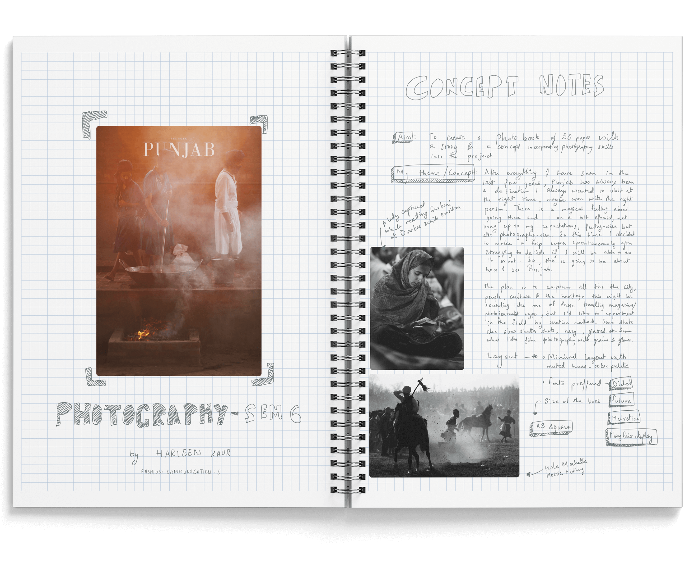
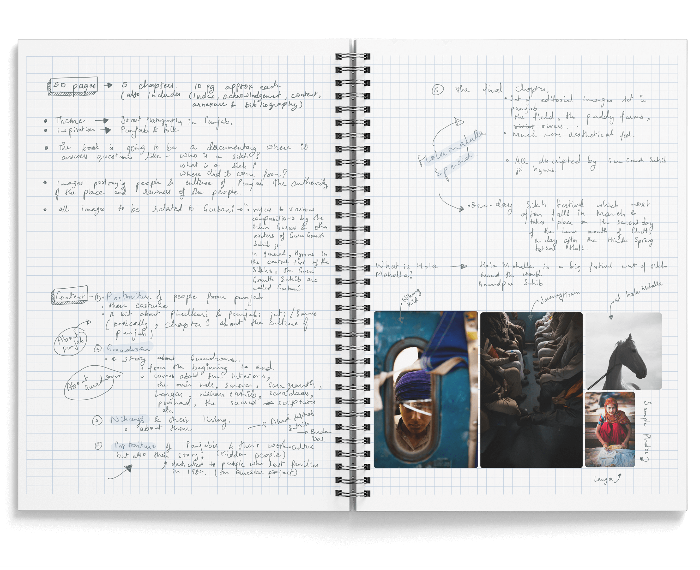
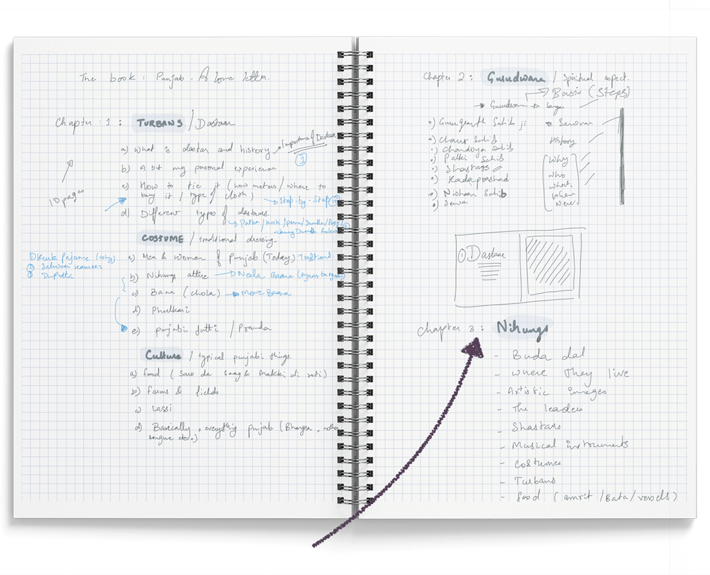
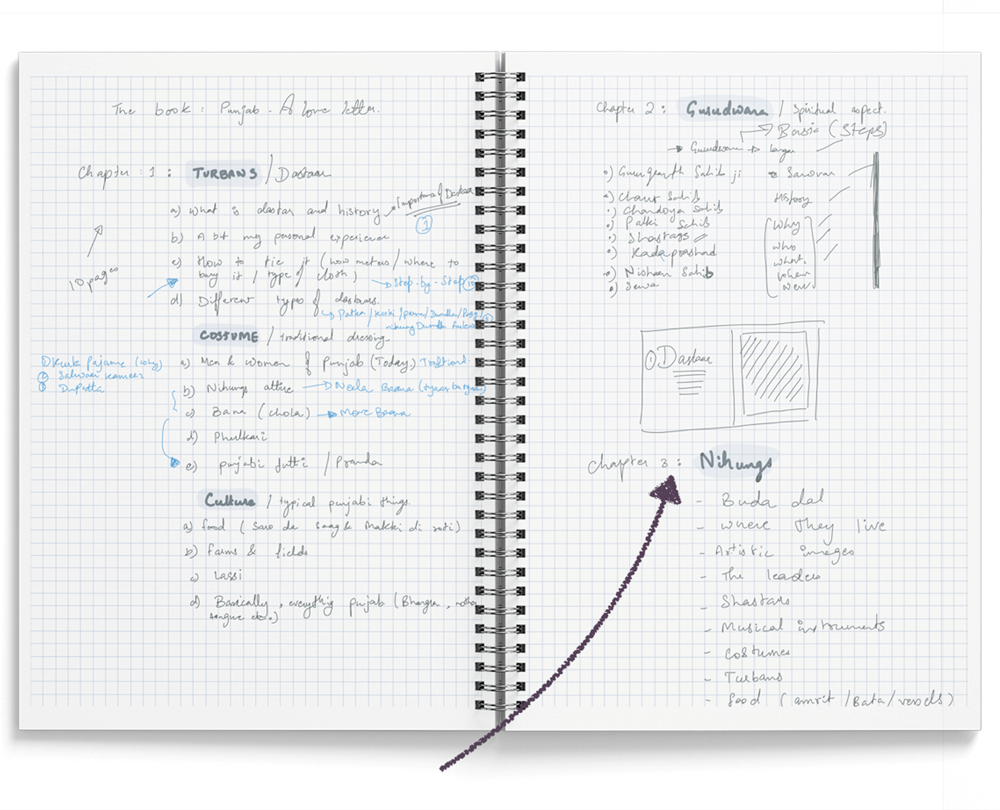
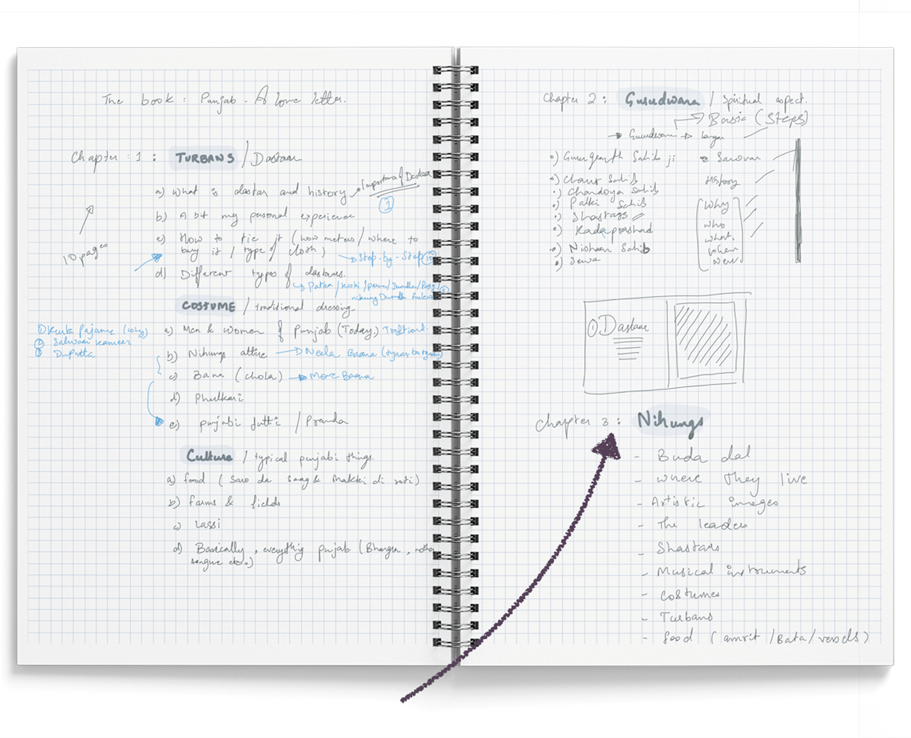
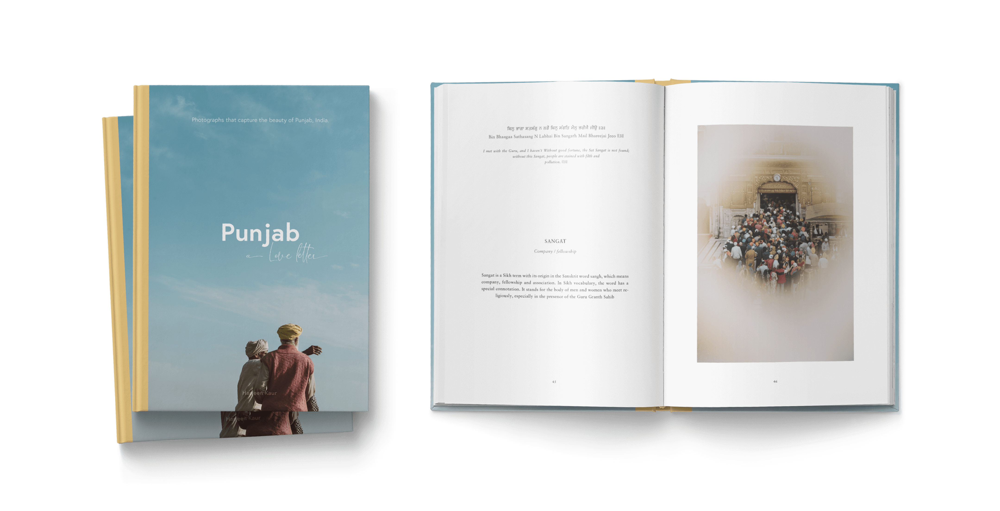

01 / Punjab a love story
This solo photography project was born from a desire to document the raw essence of Punjab — its people, culture, and spirituality. What began as a visual study evolved into a deeply personal book that pairs my photographs with hymns from the Guru Granth Sahib, exploring the intersection of devotion, identity, and everyday life.
| Role | Photography, Print design |
| Duration | 1 Week |
| Tools used | Notability, procreate, Adobe InDesign, Adobe Lightroom, Adobe PS, Illustrator, Camera |


 



